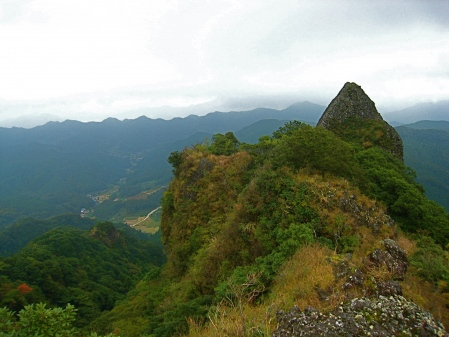
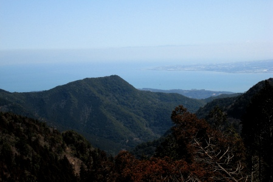
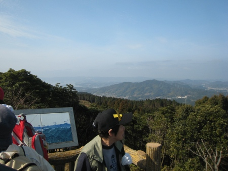

Let’s Hike Nagasaki!
As a newcomer to Nagasaki last year, there were two things I wanted to do more than anything else: go swimming, and go hiking. Unfortunately, swimming was out of the question due to the mass numbers of jellyfish that infest the waters during the summer. Luckily, I soon found out how many amazing mountains there are in this area. This is of course true for most of Japan, which is 75% covered in mountains, but it’s especially true for Kyushu. The mountains aren’t necessarily bigger or better than those in the rest of Japan, but the beautiful views surrounding them makes the area truly unique.
Nagasaki’s perimeter of ocean is extremely long as the coastline juts in and out all around this oddly shaped prefecture’s inlets, bays, and peninsulas. This makes for stunning views from the peaks of many of the area’s mountains, especially in the late summer when clear skies are virtually guaranteed.
{kind=link}
From Shijiki-san (志々伎山) near Hirado-shi, you can see as far as the Goto islands on a good day. Fugen- dake（普賢岳） in Shimabara gives you a view not only of the ocean back toward Nagasaki, but you can also see Kumamoto in the distance. From the relatively flat peak of Kokunzo-san（虚空蔵山） in Higashisonogi-cho you can take in the landscape in every direction over Sasebo, Hasami, Omura, and beyond.
Even Isahaya, not much of a sightseeing area otherwise, has some amazing hidden hiking gems. One local favorite is a full-day route that takes you around several mountains including Tara- dake（多良岳）, Shirakimine（白木峰）, and Gokahara- dake（五家原岳）, from which you get a 360-degree view that spans two prefectures (Saga and Nagasaki), several cities, and the ocean on three sides. Each of these mountains can also be hiked individually and the sunrise and sunset views over the ocean are simply stunning.
{kind=link}
So grab your bento and frozen water bottle, and head to a trail near you! You may however need a car to get around, so if you don’t have one, mention to your colleagues that you like hiking. Japanese are fervent hikers, and chances are someone with a car will invite you before too long. What better way to learn about your new home than to view it from 1,000m up?
{kind=link}
Top Picks
Best sunrise view: Shirakimine (Isahaya)
Best overall view: Gokahara (Isahaya)
Best full-day hiking plan: Fugen-dake and Unzen-dake early in the morning, followed by Unzen Onsen in the evening (Shimabara peninsula).
Be sure to check out the Nagasaki-Ken Google Map on this Blog for more detailed location information for all these hikes and more!
-Eric Franz